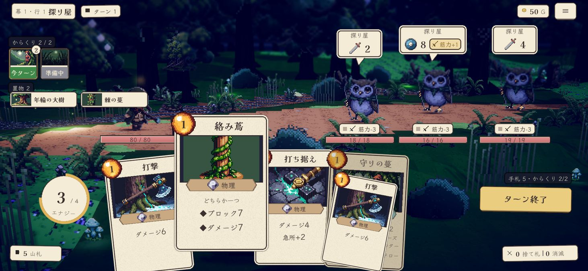

① 手札は5枚で 180px 間隔＝重なる。本文が読めるのは持ち上がった1枚だけで、隣の札の数字が隠れる
② 置物の付箋の列がリーダーの背中に触れる。5枚目からは「+N」
③ 吹き出しの高さが敵の奥行きでばらつく (76／65／76)。ボスは頭に重なる
④ 被ダメ予測 (敵の攻撃の合計−ブロック) が無い。本家とブラウザ版にはある
⑤ 山札は左下・捨て札は右下・エナジーは左＝自分の資源が三隅に散る
現状 スマホ (2026-09-15 348a23b)・キャンバス 1462×675